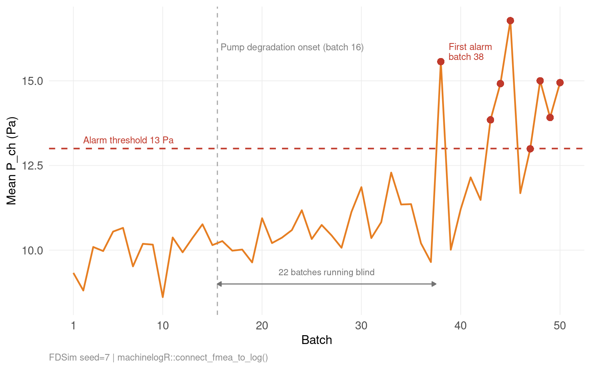
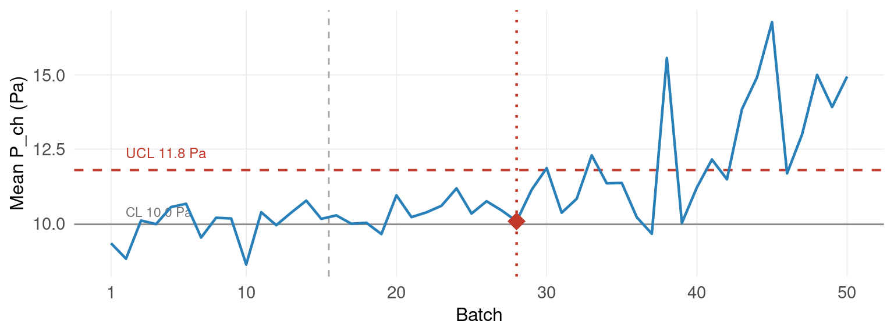
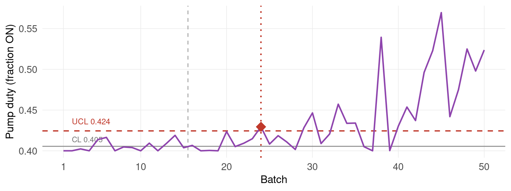
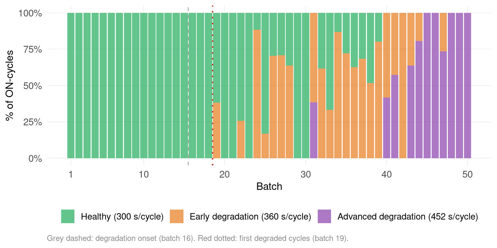

With FDSim, the freeze-drying simulator, and machinelogR, the analytics package,
let’s see how we can challenge two FMEA scores: Occurrence and Detectability.
The scenario
Once again, we’ll simulate a vacuum pump failure during a freeze-drying cycle.
With the simulator, we can set exactly when that happens and watch the effect.
For this demo, I’ve set a pump degradation starting at batch 16.
We’ll first track the mean chamber pressure (P_ch) during primary drying, across 50 batches.
The FMEA (Failure Mode and Effects Analysis)
The scores below are illustrative. They follow FMEA conventions but do not represent a validated risk assessment for any real equipment.
Failure mode
S
O
D
RPN
Vacuum pump degradation
7
4
7
196
S – severity of the effect on product quality (here: product collapse). 1–10. O – frequency of the failure mode over equipment lifetime. 1–10. D – likelihood of catching it before it reaches the product.
RPN = S x O x D – (Risk Priority Number)
This plausible scoring grid shows why the first guess for D (Detectability) is 7 :
D
Criterion
9-10
No data available
7-8
Data available, but not consulted
5-6
Data reviewed periodically, no trend analysis
3-4
Continuous monitoring with detection rules
1-2
Continuous monitoring with operational early detection
A similar scoring grid for O (Occurrence) would depend on the equipment.
So I chose O = 4 as a “not too frequent” initial guess.
What the log reveals
The FMEA and data log are connected through this pipeline:
%%{init: {'theme': 'default', 'themeVariables': {'background': '#ffffff'}}}%%
flowchart LR
classDef data fill:#f0fdf9,stroke:#0f766e,color:#0f172a
classDef fn fill:#eff6ff,stroke:#2563eb,color:#0f172a
classDef out fill:#fef3c7,stroke:#d97706,color:#0f172a
A["FDSim output"]:::data --> B(["mlog()"]):::fn
C["FMEA"]:::data --> D(["connect_fmea_to_log()"]):::fn
B --> D
D --> E["n_events, last seen"]:::out
The log shows 8 alarm events.
Failure mode
D
RPN
Alarms found
Vacuum pump degradation
7
196
8

Figure 1
Chamber pressure crosses the alarm threshold at batch 38: 22 batches after onset.
Updated FMEA
Now that the data log has been connected, the risk can be reevaluated.
D – Detectability:
D was 7 because the historian was not consulted.
We can now set D=6 (band 5-6): the log is periodically reviewed, but there’s still no trending.
O – Occurrence:
The pipeline revealed n_events / total_batches = 8 alarm events over 50 batches = 16%.
The declared O=4 was an expert estimate.
The log now puts a number on it, but how acceptable is 16%? Unfortunately, without a reliable scoring grid, I’ll leave O=4 for the rest of this demo. With a scoring grid, O could be better than expected… or worse.
Now with a D=6 and O=4, the RPN drops from 196 to 168.
Failure mode
S
O
Observed rate
D
RPN
Vacuum pump degradation
7
4
8 events / 50 batches
6
168
Can we further improve the Detectability D ?
Deeper in the monitoring stack
D moves down in steps. Method first, then signal position in the failure chain, then observation window. Each lever is independent.
SPC on chamber pressure
The control limits are calculated from the first 15 stable batches (Phase I baseline).

Figure 2
Detection at batch 28 after 9 consecutive batches above the center line (rule 2).
That’s 12 batches after onset.
Detectability D can now be lowered to 4 (Continuous monitoring with detection rules).
SPC on pump duty cycle
Let’s look at the pump cycle instead of the chamber pressure. It’s the % time the pump runs per batch.
When capacity degrades, the pump compensates by running longer.

Figure 3
Detection at batch 24, 8 batches after onset, the earliest in this simulation.
The Detectability D has improved and can now be lowered to 3.
Intra-cycle signals
Every pump ON/OFF event is recorded.
The function fit_hmm() fits a Hidden Markov Model on the sequence of ON-cycle durations.
It identifies 3 latent states based on ON-cycle duration: healthy (300 s/cycle), early degradation (360 s/cycle), or advanced degradation (452 s/cycle).
The chart shows the % of each state per batch.

Figure 4
First degraded cycles at batch 19, 3 batches after onset.
The HMM assigns individual ON-cycles to a degraded state as soon as the pump capacity drops significantly.
The Detectability D drops to 2.
Conclusion
O could not be updated. But how much did D move?
Table 1
From D=7 to D=2, the RPN dropped from 196 to 56, without touching Severity or Occurrence.
Just by improving the monitoring method.
The closer the signal to the failure mechanism, the earlier the detection.
Source Code
---title: "How to challenge a FMEA with historian data"date: 2026-05-17categories: [fmea, spc, lyo, gxp]order: 3execute: echo: false warning: false message: falseeditor: markdown: wrap: sentence---```{r setup}library(tidyverse)library(gt)library(reactable)library(reactablefmtr)library(dataui)library(plotly)library(htmltools)fdsim_path <- here::here("..", "FDSim")mlr_path <- here::here("..", "machinelogR")for (f in list.files(file.path(fdsim_path, "R"), pattern = "\\.R$", full.names = TRUE)) source(f)devtools::load_all(mlr_path, quiet = TRUE)cache_dir <- file.path(mlr_path, "sandbox", "fmea_connect_cache")``````{r load-cache}batch_pump <- readRDS(file.path(cache_dir, "batch_C2.rds"))events_pump <- readRDS(file.path(cache_dir, "events_C2.rds"))mlog_pump <- readRDS(file.path(cache_dir, "mlog_C2.rds"))params <- readRDS(file.path(cache_dir, "params.rds"))fmea_lyo <- readRDS(file.path(cache_dir, "fmea_lyo.rds"))on_cycles_C2 <- readRDS(file.path(cache_dir, "on_cycles_C2.rds"))hmm_pump_C2 <- readRDS(file.path(cache_dir, "hmm_pump_C2.rds"))# Translate failure mode names to English and update cachefmea_lyo <- fmea_lyo |> mutate(failure_mode = case_when( grepl("pompe", failure_mode, ignore.case = TRUE) ~ "Vacuum pump degradation", grepl("condenseur", failure_mode, ignore.case = TRUE) ~ "Condenser drift (ice buildup)", grepl("T_crit", failure_mode, ignore.case = TRUE) ~ "Product T_crit exceedance", TRUE ~ failure_mode ))saveRDS(fmea_lyo, file.path(cache_dir, "fmea_lyo.rds"))N <- params$Nparams_pump <- params$pC2ALARM_THRESH <- params_pump$P_ch_setpt * params_pump$pump_alarm_P_fracSTABLE_LOTS <- params_pump$pump_stable_lotsSEED <- params$SEED# HMM : premier lot avec au moins un cycle dégradédet_lot_first <- hmm_pump_C2$posterior |> dplyr::filter(hmm_state != hmm_pump_C2$healthy_state) |> dplyr::pull(lot) |> min()# Durées des états HMM (depuis le cache, pas hardcodées).e <- hmm_pump_C2$emission_sdur_healthy <- round(.e$elapsed_mean_s[.e$hmm_state == hmm_pump_C2$healthy_state])dur_early <- round(.e$elapsed_mean_s[.e$hmm_state == hmm_pump_C2$early_state])dur_advanced <- round(.e$elapsed_mean_s[.e$hmm_state == hmm_pump_C2$advanced_state])lbl_healthy <- paste0("Healthy (", dur_healthy, " s/cycle)")lbl_early <- paste0("Early degradation (", dur_early, " s/cycle)")lbl_advanced <- paste0("Advanced degradation (", dur_advanced, " s/cycle)")# Proportions d'états par lot (pour la figure proportion)prop_by_lot <- hmm_pump_C2$posterior |> dplyr::count(lot, hmm_state) |> dplyr::group_by(lot) |> dplyr::mutate(pct = n / sum(n)) |> dplyr::ungroup() |> dplyr::mutate(state_label = dplyr::case_when( hmm_state == hmm_pump_C2$healthy_state ~ lbl_healthy, hmm_state == hmm_pump_C2$early_state ~ lbl_early, hmm_state == hmm_pump_C2$advanced_state ~ lbl_advanced ))``````{r connect-pump}res_pump <- connect_fmea_to_log( fmea_lyo, mlog(mlog_pump |> select(equipment_ID, type, alarm, start, end, elapsed_s)))```With `FDSim`, the freeze-drying simulator, and `machinelogR`, the analytics package,\let's see how we can challenge two **FMEA** scores: *Occurrence* and *Detectability*.## The scenarioOnce again, we'll simulate a **vacuum pump failure** during a freeze-drying cycle.\With the simulator, we can set exactly when that happens and watch the effect.The pump degradation triggers a chain reaction:```{mermaid}%%{init: {'theme': 'default', 'themeVariables': {'background': '#ffffff'}}}%%flowchart LRclassDef pump fill:#f5f5f5,stroke:#9e9e9e,color:#333classDef rising fill:#fff3e0,stroke:#d97706,color:#333classDef product fill:#fffde7,stroke:#f59e0b,color:#333classDef danger fill:#fef2f2,stroke:#b91c1c,color:#b91c1cA["<img src='https://api.iconify.design/material-symbols:water-pump-outline.svg' width='28' height='28'/><br/><b>Pump</b><br/>loses<br/>capacity"]:::pump -->|less<br/>vacuum| B["<img src='https://api.iconify.design/lucide:gauge.svg' width='28' height='28'/><br/><b>Chamber<br/>Pressure</b><br/>rises"]:::rising -->|with the same<br/>shelf temp.| C["<img src='https://api.iconify.design/lucide:thermometer.svg' width='28' height='28'/><br/><b>Max vial<br/>temperature</b><br/>rises"]:::product -->|approaches<br/>critical temp.| D["<img src='https://api.iconify.design/lucide:triangle-alert.svg' width='28' height='28'/><br/><b>Batch</b><br/>at risk"]:::danger```For this demo, I've set a **pump degradation** starting at batch **16**.\We'll first track the mean chamber pressure (P_ch) during primary drying, across 50 batches.## The FMEA *(Failure Mode and Effects Analysis)**The scores below are illustrative. They follow FMEA conventions but do not represent a validated risk assessment for any real equipment.*```{r fmea-table}fmea_lyo |> filter(grepl("pump", failure_mode, ignore.case = TRUE)) |> select(failure_mode, severity, occurrence, detection, rpn) |> gt() |> cols_label(failure_mode = "Failure mode", severity = "S", occurrence = "O", detection = "D", rpn = "RPN")```**S** -- severity of the effect on product quality (here: product collapse). 1--10.\**O** -- frequency of the failure mode over equipment lifetime. 1--10.\**D** -- likelihood of catching it before it reaches the product.**RPN** = S x O x D -- (Risk Priority Number)This plausible scoring grid shows why the first guess for D *(Detectability)* is 7 :```{r scoring-grid}d_scale <- scales::col_numeric(c("#d6eaf8", "#1a5276"), domain = c(1, 10))rpn_scale <- scales::col_numeric(c("#27ae60", "#c0392b"), domain = c(0, 250))tibble( D = c("9-10", "7-8", "5-6", "3-4", "1-2"), Criterion = c( "No data available", "Data available, but not consulted", "Data reviewed periodically, no trend analysis", "Continuous monitoring with detection rules", "Continuous monitoring with operational early detection" )) |> gt() |> tab_style(style = list(cell_fill(color = d_scale(9.5)), cell_text(color = "white")), locations = cells_body(rows = D == "9-10", columns = D)) |> tab_style(style = list(cell_fill(color = d_scale(7.5)), cell_text(color = "white")), locations = cells_body(rows = D == "7-8", columns = D)) |> tab_style(style = cell_fill(color = d_scale(5.5)), locations = cells_body(rows = D == "5-6", columns = D)) |> tab_style(style = cell_fill(color = d_scale(3.5)), locations = cells_body(rows = D == "3-4", columns = D)) |> tab_style(style = cell_fill(color = d_scale(1.5)), locations = cells_body(rows = D == "1-2", columns = D))```A similar scoring grid for O *(Occurrence)* would depend on the equipment.\So I chose O = 4 as a *"not too frequent"* initial guess.## What the log revealsThe FMEA and data log are connected through this pipeline:```{mermaid}%%{init: {'theme': 'default', 'themeVariables': {'background': '#ffffff'}}}%%flowchart LRclassDef data fill:#f0fdf9,stroke:#0f766e,color:#0f172aclassDef fn fill:#eff6ff,stroke:#2563eb,color:#0f172aclassDef out fill:#fef3c7,stroke:#d97706,color:#0f172aA["FDSim output"]:::data --> B(["mlog()"]):::fnC["FMEA"]:::data --> D(["connect_fmea_to_log()"]):::fnB --> DD --> E["n_events, last seen"]:::out```The log shows 8 alarm events.```{r results-pump}res_pump |> filter(grepl("pump", failure_mode, ignore.case = TRUE)) |> select(failure_mode, detection, rpn, n_events) |> gt() |> cols_label(failure_mode = "Failure mode", detection = "D", rpn = "RPN", n_events = "Alarms found")``````{r metrics-pump}extract_P_ch <- function(batch) { map_dfr(seq_len(length(batch)), function(i) { prim <- batch[[i]] |> filter(phase == "primary") tibble(lot = i, P_ch_mean = mean(prim$P_ch, na.rm = TRUE)) })}metrics_pump <- extract_P_ch(batch_pump)alarm_lots_pump <- events_pump |> filter(category == "Alarme") |> pull(batch_id) |> unique()alarm_pts_pump <- metrics_pump |> filter(lot %in% alarm_lots_pump)``````{r spc-setup}ONSET <- STABLE_LOTS + 1LRULES <- c(1L, 2L, 5L)T_CRIT_C <- .LYO_CONST$T_crit - 273.15metrics_all <- map_dfr(seq_len(N), function(i) { prim <- batch_pump[[i]] |> filter(phase == "primary") tibble( lot = i, P_ch_mean = mean(prim$P_ch, na.rm = TRUE), pump_duty_mean = mean(prim$pump_duty, na.rm = TRUE), T_vial_max_C = max(prim$T_vial_C, na.rm = TRUE) )})bl <- metrics_all |> filter(lot <= STABLE_LOTS)make_lim <- function(col) spc_baseline( bl |> rename(value = !!col), variable = "value", time_col = "lot")lim_P <- make_lim("P_ch_mean")lim_pump <- make_lim("pump_duty_mean")fl_phase2 <- function(det) { idx <- det$first_index[det$detected & !is.na(det$first_index) & det$first_index > STABLE_LOTS] if (length(idx) == 0) return(list(lot = NA_integer_, lag = NA_integer_, rule = NA_integer_)) lot <- min(idx) rule <- det$rule[det$first_index == lot & det$detected][1] list(lot = lot, lag = lot - ONSET, rule = rule)}det_P <- first_detection(metrics_all$P_ch_mean, lim_P, RULES)det_pump <- first_detection(metrics_all$pump_duty_mean, lim_pump, RULES)fl_P <- fl_phase2(det_P)fl_pump <- fl_phase2(det_pump)alarm_first <- events_pump |> filter(category == "Alarme") |> pull(batch_id) |> min()pump_row <- fmea_lyo |> filter(grepl("pump", failure_mode, ignore.case = TRUE))S_pump <- pump_row$severity[1]O_pump <- pump_row$occurrence[1]``````{r theme}theme_web <- theme_minimal(base_size = 13) + theme( panel.grid.minor = element_blank(), panel.grid.major = element_line(colour = "grey92", linewidth = 0.3), plot.title = element_text(face = "bold", size = 14), plot.subtitle = element_text(colour = "grey40", size = 11), axis.text = element_text(size = 11), axis.title = element_text(size = 12), plot.caption = element_text(size = 9, colour = "grey55", hjust = 0), plot.background = element_rect(fill = "white", colour = NA), panel.background = element_rect(fill = "white", colour = NA) )``````{r fig-pump, fig.width=8, fig.height=5}ggplot(metrics_pump, aes(lot, P_ch_mean)) + geom_vline(xintercept = STABLE_LOTS + 0.5, colour = "grey65", linetype = "dashed", linewidth = 0.5) + annotate("text", x = STABLE_LOTS + 0.8, y = 16, label = "Pump degradation onset (batch 16)", hjust = 0, size = 3.2, colour = "grey50") + geom_hline(yintercept = ALARM_THRESH, colour = "#c0392b", linetype = "dashed", linewidth = 0.7) + annotate("text", x = 2, y = ALARM_THRESH + 0.25, label = sprintf("Alarm threshold %.0f Pa", ALARM_THRESH), hjust = 0, size = 3.2, colour = "#c0392b") + geom_line(colour = "#e67e22", linewidth = 0.8) + geom_point(data = alarm_pts_pump, aes(lot, P_ch_mean), colour = "#c0392b", size = 3, shape = 16) + annotate("text", x = min(alarm_lots_pump) + 0.8, y = alarm_pts_pump |> filter(lot == min(alarm_lots_pump)) |> pull(P_ch_mean) + 0.3, label = paste0("First alarm\nbatch ", min(alarm_lots_pump)), hjust = 0, size = 3.2, colour = "#c0392b", lineheight = 0.9) + annotate("segment", x = STABLE_LOTS + 0.5, xend = min(alarm_lots_pump) - 0.5, y = 9, yend = 9, colour = "grey45", linewidth = 0.5, arrow = arrow(ends = "both", type = "closed", length = unit(0.15, "cm"))) + annotate("text", x = (STABLE_LOTS + min(alarm_lots_pump)) / 2, y = 9.35, label = "22 batches running blind", size = 3, colour = "grey45", hjust = 0.5) + scale_y_continuous(limits = c(8.5, NA)) + scale_x_continuous(breaks = c(1, 10, 20, 30, 40, 50)) + labs(x = "Batch", y = "Mean P_ch (Pa)", caption = sprintf("FDSim seed=%d | machinelogR::connect_fmea_to_log()", SEED)) + theme_web```Chamber pressure crosses the alarm threshold at batch 38: [22 batches]{.problem} after onset.## Updated FMEANow that the data log has been connected, the risk can be reevaluated.**D -- Detectability:**\D was 7 because the historian was not consulted.\We can now set D=6 (band 5-6): the log is periodically reviewed, but there's still no trending.**O -- Occurrence:**\The pipeline revealed `n_events / total_batches` = 8 alarm events over 50 batches = **16%**.\The declared O=4 was an expert estimate.\The log now puts a number on it, but how acceptable is 16%? Unfortunately, without a reliable scoring grid, I'll leave O=4 for the rest of this demo. With a scoring grid, O could be better than expected... or worse.Now with a D=6 and O=4, the RPN drops from 196 to 168.```{r fmea-updated}pump_raw <- res_pump |> filter(grepl("pump", failure_mode, ignore.case = TRUE))fmea_updated <- pump_raw |> select(failure_mode, severity, occurrence, detection, rpn, n_events) |> mutate( occurrence_note = paste0(n_events, " events / ", N, " batches"), detection = 6L, rpn = severity * occurrence * detection )fmea_updated |> select(failure_mode, severity, occurrence, occurrence_note, detection, rpn) |> gt() |> tab_style( style = list(cell_fill(color = "#E8F5E9"), cell_text(weight = "bold")), locations = cells_body(columns = c(detection, rpn)) ) |> tab_style( style = list(cell_fill(color = "#EFF6FF")), locations = cells_body(columns = c(occurrence, occurrence_note)) ) |> cols_label( failure_mode = "Failure mode", severity = "S", occurrence = "O", occurrence_note = "Observed rate", detection = "D", rpn = "RPN" )```Can we further improve the *Detectability* D ?\## Deeper in the monitoring stackD moves down in steps. Method first, then signal position in the failure chain, then observation window. Each lever is independent.### SPC on chamber pressureThe control limits are calculated from the first 15 stable batches (Phase I baseline).```{r fig-spc-pch, fig.width=8, fig.height=3}UCL_P <- lim_P$CL + 3 * lim_P$sigmarng_P <- diff(range(metrics_all$P_ch_mean))p_pch <- ggplot(metrics_all, aes(lot, P_ch_mean)) + geom_vline(xintercept = STABLE_LOTS + 0.5, colour = "grey65", linetype = "dashed", linewidth = 0.5) + geom_hline(yintercept = lim_P$CL, colour = "grey55", linetype = "solid", linewidth = 0.5) + geom_hline(yintercept = UCL_P, colour = "#c0392b", linetype = "dashed", linewidth = 0.7) + annotate("text", x = 2, y = UCL_P + rng_P * 0.07, label = sprintf("UCL %.1f Pa", UCL_P), hjust = 0, size = 3.2, colour = "#c0392b") + annotate("text", x = 2, y = lim_P$CL + rng_P * 0.05, label = sprintf("CL %.1f Pa", lim_P$CL), hjust = 0, size = 3.0, colour = "grey45") + geom_line(colour = "#2980b9", linewidth = 0.8) + scale_x_continuous(breaks = c(1, 10, 20, 30, 40, 50)) + labs(x = "Batch", y = "Mean P_ch (Pa)") + theme_webif (!is.na(fl_P$lot)) { det_pt_P <- metrics_all |> filter(lot == fl_P$lot) p_pch <- p_pch + geom_vline(xintercept = fl_P$lot, colour = "#c0392b", linetype = "dotted", linewidth = 0.8) + geom_point(data = det_pt_P, aes(x = lot, y = P_ch_mean), colour = "#c0392b", size = 5, shape = 18)}p_pch```[Detection at batch `r fl_P$lot`]{.solution} after 9 consecutive batches above the center line (rule 2).\That's **`r fl_P$lag` batches after onset**.\Detectability D can now be lowered to 4 (Continuous monitoring with detection rules).### SPC on pump duty cycleLet's look at the pump cycle instead of the chamber pressure. It's the % time the pump runs per batch.\When capacity degrades, the pump compensates by running longer.```{r fig-spc-pump, fig.width=8, fig.height=3}UCL_pump <- lim_pump$CL + 3 * lim_pump$sigmarng_pump <- diff(range(metrics_all$pump_duty_mean))p_pump <- ggplot(metrics_all, aes(lot, pump_duty_mean)) + geom_vline(xintercept = STABLE_LOTS + 0.5, colour = "grey65", linetype = "dashed", linewidth = 0.5) + geom_hline(yintercept = lim_pump$CL, colour = "grey55", linetype = "solid", linewidth = 0.5) + geom_hline(yintercept = UCL_pump, colour = "#c0392b", linetype = "dashed", linewidth = 0.7) + annotate("text", x = 2, y = UCL_pump + rng_pump * 0.07, label = sprintf("UCL %.3f", UCL_pump), hjust = 0, size = 3.2, colour = "#c0392b") + annotate("text", x = 2, y = lim_pump$CL + rng_pump * 0.05, label = sprintf("CL %.3f", lim_pump$CL), hjust = 0, size = 3.0, colour = "grey45") + geom_line(colour = "#8e44ad", linewidth = 0.8) + scale_x_continuous(breaks = c(1, 10, 20, 30, 40, 50)) + labs(x = "Batch", y = "Pump duty (fraction ON)") + theme_webif (!is.na(fl_pump$lot)) { det_pt_pump <- metrics_all |> filter(lot == fl_pump$lot) p_pump <- p_pump + geom_vline(xintercept = fl_pump$lot, colour = "#c0392b", linetype = "dotted", linewidth = 0.8) + geom_point(data = det_pt_pump, aes(x = lot, y = pump_duty_mean), colour = "#c0392b", size = 5, shape = 18)}p_pump```[Detection at batch `r fl_pump$lot`]{.solution}, **`r fl_pump$lag` batches after onset**, the earliest in this simulation.\The Detectability D has improved and can now be lowered to 3.### Intra-cycle signalsEvery pump ON/OFF event is recorded.The function `fit_hmm()` fits a Hidden Markov Model on the sequence of ON-cycle durations.\It identifies 3 *latent states* based on ON-cycle duration: healthy (`r dur_healthy` s/cycle), early degradation (`r dur_early` s/cycle), or advanced degradation (`r dur_advanced` s/cycle).\The chart shows the % of each state per batch.```{r fig-hmm-pump, fig.width=8, fig.height=4}state_order_bar <- c(lbl_healthy, lbl_early, lbl_advanced)state_cols_bar <- setNames( c("#27ae60", "#e67e22", "#8e44ad"), c(lbl_healthy, lbl_early, lbl_advanced))ggplot( prop_by_lot |> dplyr::mutate(state_label = factor(state_label, levels = state_order_bar)), aes(lot, pct, fill = state_label)) + geom_col(width = 0.9, alpha = 0.72) + geom_vline(xintercept = STABLE_LOTS + 0.5, colour = "grey65", linetype = "dashed", linewidth = 0.5) + geom_vline(xintercept = det_lot_first - 0.5, colour = "#c0392b", linetype = "dotted", linewidth = 0.8) + scale_fill_manual(values = state_cols_bar) + scale_x_continuous(breaks = c(1, 10, 20, 30, 40, 50)) + scale_y_continuous(labels = scales::percent_format()) + labs(x = "Batch", y = "% of ON-cycles", fill = NULL, caption = sprintf( "Grey dashed: degradation onset (batch %d). Red dotted: first degraded cycles (batch %d).", STABLE_LOTS + 1L, det_lot_first )) + theme_web + theme(legend.position = "bottom")```[First degraded cycles at batch `r det_lot_first`]{.solution}, **`r det_lot_first - ONSET` batches after onset.**\The HMM assigns individual ON-cycles to a degraded state as soon as the pump capacity drops significantly.\The Detectability D drops to 2.### ConclusionO could not be updated. But how much did D move?```{r tbl-recap}recap_tbl <- tibble( Step = c("Initial guess", "+ data", "+ SPC", "+ SPC", "+ HMM"), Step_highlight = c(0, 1, 1, 0, 1), Signal = c("(none)", "P_ch", "P_ch", "Pump duty", "T_ON duration"), Signal_highlight = c(0, 1, 0, 1, 1), Trigger = c("", "Alarm threshold", "Nelson rule 2", "Nelson rule 1", "HMM state change"), Trigger_highlight= c(0, 0, 1, 0, 1), `Detection at batch` = c("", min(alarm_lots_pump), fl_P$lot, fl_pump$lot, det_lot_first), D = c(7L, 6L, 4L, 3L, 2L), RPN = S_pump * O_pump * c(7L, 6L, 4L, 3L, 2L), D_color = d_scale(c(7L, 6L, 4L, 3L, 2L)), RPN_color = rpn_scale(S_pump * O_pump * c(7L, 6L, 4L, 3L, 2L)))pill <- function(value) { span( style = " background: #8fbc8f; color: white; font-weight: 500; border-radius: 12px; padding: 2px 10px; display: inline-block; ", value )}pill_if <- function(flag_col) { function(value, index) { if (recap_tbl[[flag_col]][index] == 1) pill(value) else value }}reactable( recap_tbl |> select(-D_color, -RPN_color, -Signal_highlight, -Step_highlight, -Trigger_highlight), columns = list( `Detection at batch` = colDef(), Step = colDef(cell = pill_if("Step_highlight")), Signal = colDef(minWidth = 120, cell = pill_if("Signal_highlight")), Trigger = colDef(minWidth = 160, cell = pill_if("Trigger_highlight")), D = colDef( minWidth = 100, cell = data_bars(recap_tbl, fill_color_ref = "D_color", fill_gradient = FALSE, bar_height = 16, text_position = "outside-end", min_value = 1, max_value = 10) ), RPN = colDef( minWidth = 100, cell = data_bars(recap_tbl, fill_color_ref = "RPN_color", fill_gradient = FALSE, bar_height = 16, text_position = "outside-end", min_value = 0, max_value = 250) ) ), highlight = TRUE, borderless = TRUE, theme = reactableTheme(backgroundColor = "white", highlightColor = "#fafafa", cellPadding = "8px 12px"))```From D=7 to D=2, the RPN dropped from `r S_pump * O_pump * 7L` to `r S_pump * O_pump * 2L`, without touching Severity or Occurrence.\Just by improving the monitoring method.\The closer the signal to the failure mechanism, the earlier the detection.